STUtility - Vignette
Joseph Bergenstråhle, Royal Institute of Technology (KTH)
Ludvig Larsson, Royal Institute of Technology (KTH)
Last updated: 2019-10-31
Checks: 5 1
Knit directory: STUtility_web_site/
This reproducible R Markdown analysis was created with workflowr (version 1.3.0). The Checks tab describes the reproducibility checks that were applied when the results were created. The Past versions tab lists the development history.
Great! Since the R Markdown file has been committed to the Git repository, you know the exact version of the code that produced these results.
Great job! The global environment was empty. Objects defined in the global environment can affect the analysis in your R Markdown file in unknown ways. For reproduciblity it’s best to always run the code in an empty environment.
The command set.seed(20191031) was run prior to running the code in the R Markdown file. Setting a seed ensures that any results that rely on randomness, e.g. subsampling or permutations, are reproducible.
Great job! Recording the operating system, R version, and package versions is critical for reproducibility.
- infotable2
- read_input_2
To ensure reproducibility of the results, delete the cache directory image_processing_cache and re-run the analysis. To have workflowr automatically delete the cache directory prior to building the file, set delete_cache = TRUE when running wflow_build() or wflow_publish().
Great! You are using Git for version control. Tracking code development and connecting the code version to the results is critical for reproducibility. The version displayed above was the version of the Git repository at the time these results were generated.
Note that you need to be careful to ensure that all relevant files for the analysis have been committed to Git prior to generating the results (you can use wflow_publish or wflow_git_commit). workflowr only checks the R Markdown file, but you know if there are other scripts or data files that it depends on. Below is the status of the Git repository when the results were generated:
Ignored files:
Ignored: .DS_Store
Ignored: analysis/.DS_Store
Ignored: analysis/about_cache/
Ignored: analysis/getting_started_cache/
Ignored: analysis/image_processing_cache/
Ignored: docs/.DS_Store
Untracked files:
Untracked: analysis/style.css
Untracked: docs/assets/
Untracked: docs/figure/
Unstaged changes:
Modified: analysis/_site.yml
Note that any generated files, e.g. HTML, png, CSS, etc., are not included in this status report because it is ok for generated content to have uncommitted changes.
These are the previous versions of the R Markdown and HTML files. If you’ve configured a remote Git repository (see ?wflow_git_remote), click on the hyperlinks in the table below to view them.
| File | Version | Author | Date | Message |
|---|---|---|---|---|
| Rmd | e4e84dc | Ludvig Larsson | 2019-10-31 | Added theme |
library(STutility)Loading required package: SeuratRegistered S3 method overwritten by 'R.oo':
method from
throw.default R.methodsS3Loading required package: SingleCellExperimentLoading required package: SummarizedExperimentLoading required package: GenomicRangesLoading required package: stats4Loading required package: BiocGenericsLoading required package: parallel
Attaching package: 'BiocGenerics'The following objects are masked from 'package:parallel':
clusterApply, clusterApplyLB, clusterCall, clusterEvalQ,
clusterExport, clusterMap, parApply, parCapply, parLapply,
parLapplyLB, parRapply, parSapply, parSapplyLBThe following objects are masked from 'package:stats':
IQR, mad, sd, var, xtabsThe following objects are masked from 'package:base':
anyDuplicated, append, as.data.frame, basename, cbind,
colnames, dirname, do.call, duplicated, eval, evalq, Filter,
Find, get, grep, grepl, intersect, is.unsorted, lapply, Map,
mapply, match, mget, order, paste, pmax, pmax.int, pmin,
pmin.int, Position, rank, rbind, Reduce, rownames, sapply,
setdiff, sort, table, tapply, union, unique, unsplit, which,
which.max, which.minLoading required package: S4Vectors
Attaching package: 'S4Vectors'The following object is masked from 'package:base':
expand.gridLoading required package: IRangesLoading required package: GenomeInfoDbLoading required package: BiobaseWelcome to Bioconductor
Vignettes contain introductory material; view with
'browseVignettes()'. To cite Bioconductor, see
'citation("Biobase")', and for packages 'citation("pkgname")'.Loading required package: DelayedArrayLoading required package: matrixStats
Attaching package: 'matrixStats'The following objects are masked from 'package:Biobase':
anyMissing, rowMediansLoading required package: BiocParallel
Attaching package: 'DelayedArray'The following objects are masked from 'package:matrixStats':
colMaxs, colMins, colRanges, rowMaxs, rowMins, rowRangesThe following objects are masked from 'package:base':
aperm, apply, rowsum
Attaching package: 'SummarizedExperiment'The following object is masked from 'package:Seurat':
AssaysLoading required package: ggplot210X Visium platform
Input files
After running the 10X SpaceRanger pipeline, the output includes:
- Count file in H5 format
- Barcode position file
- H&E image
To use the full range of functions within STutility, all three files are needed for each sample. However, all data analysis steps that do not involve the H&E image can be performed with only the count file as input.
To follow along this tutorial, download the test data set at TODO:[insert test data set link]. The downloadable content consists of count files, output from our spot detector tool, H&E stained images as well as an “infoTable” to read in the files into R.
10x infoTable
The same format is used as the original ST platform, see @ref(The-infoTable)
samples <- list.files(path = "~/Hippocampus_Visium/", recursive = T, pattern = "filtered_feature_bc_matrix.h5", full.names = T)
imgs <- list.files(path = "~/Hippocampus_Visium/", recursive = T, pattern = "hires_image.png", full.names = T)
spotfiles <- list.files(path = "~/Hippocampus_Visium/", recursive = T, pattern = "list.txt", full.names = T)
infoTable <- data.frame(imgs, samples, spotfiles, sample_id = c("Hippo_A", "Hippo_B"), stringsAsFactors = F)
Warning: The above code chunk cached its results, but it won’t be re-run if previous chunks it depends on are updated. If you need to use caching, it is highly recommended to also set knitr::opts_chunk$set(autodep = TRUE) at the top of the file (in a chunk that is not cached). Alternatively, you can customize the option dependson for each individual chunk that is cached. Using either autodep or dependson will remove this warning. See the knitr cache options for more details.
Loading 10X data
To read in the 10x Visium .h5 files, the package hdf5r needs to be installed (BiocManager::install("hdf5r")). By default 10X Visium output format implies setting transpose=F. [There is a specified scaling factor for the H&E image. The picture with suffix “high_res” uses the default scaling factor of 0.1039393. However, is other pictures are used, specify the scaling factor when calling the InputFromTable() function. All scaling factors are found in the scalefactors_json.json which you have in your 10X output folder] (OBS CHECK HOW THE WORKFLOW 10X IS SUPPOSED TO BE)
se <- InputFromTable(infotable = infoTable,
min.gene.count = 100,
min.gene.spots = 5,
min.spot.count = 500)[1] "Removing all spots outside of tissue"
Loading /Users/ludviglarsson/Hippocampus_Visium//142078/SIGAA7_142078_filtered_feature_bc_matrix.h5 count matrix from a 'Visium' experiment
Loading /Users/ludviglarsson/Hippocampus_Visium//142079/SIGAA1_142079_filtered_feature_bc_matrix.h5 count matrix from a 'Visium' experiment
------------- Filtering (not including images based filtering) --------------
Spots removed: 7
Genes removed: 17616
After filtering the dimensions of the experiment is: [13437 genes, 5053 spots]
Warning: The above code chunk cached its results, but it won’t be re-run if previous chunks it depends on are updated. If you need to use caching, it is highly recommended to also set knitr::opts_chunk$set(autodep = TRUE) at the top of the file (in a chunk that is not cached). Alternatively, you can customize the option dependson for each individual chunk that is cached. Using either autodep or dependson will remove this warning. See the knitr cache options for more details.
Loading and handling images
With the Seurat object created, we are ready to load the H&E images from the file paths provided in the infoTable. The LoadImages() function allow you to load the images into the Seurat object and will automatically save a scaled down version of each image that you can use for plotting.
You should be aware that the resolution is by default very low (400 pixels wide). The reason for this is that STUtility makes it possible to apply various image transformations to the images, but since these processing steps are slow and requires significant amounts of memory, it is much faster to learn the transformations on a small image and later apply the transformations to a higher resolution image. See the image processing section of this vignette for more details.
se <- LoadImages(se, time.resolve = F, verbose = T)
OBS: We have noted that some systems experience memory problems due to large size image information not being cleared when removing old objects. If this is the case, the user can set time.resolve=TRUE, which will add a small garbage collection step to avoid this issue.
NOTE: time.resolve is set to TRUE as default in the current version. This will imply that the process takes approx. 5sec longer per sample. Turn this off if annoyed.
The core of an ST experiment is the interplay between quantitative RNAseq data and qualitative image data. Working in R, the handling of image information and plotting of multiple samples can get a bit cumbersome, especially if the images are of higher resolution. Typically, we rarely find much use of plotting multiple samples together with the tissue images within this framework. Instead, the general tip is to perform the various plots using only the expression data, and after finding anything of interest that warrants further analysis - take out that sample and plot it individually together with the stained tissue image.
For example, we can visualize the number of RNA features and RNA counts on the ST array coordinates and quickly verify where we capture more material from the tissue.
NOTE: see the end of the vignette how to handle plotting if you are missing image/spot-files.
# TODO: make sure that levels are set in facets
ST.FeaturePlot(object = se,
features = c("nFeature_RNA", "nCount_RNA"),
cols = c("black", "dark blue", "cyan", "yellow", "red", "dark red"),
ncol = 2,
grid.ncol = 1,
pt.size = 0.5,
dark.theme = T)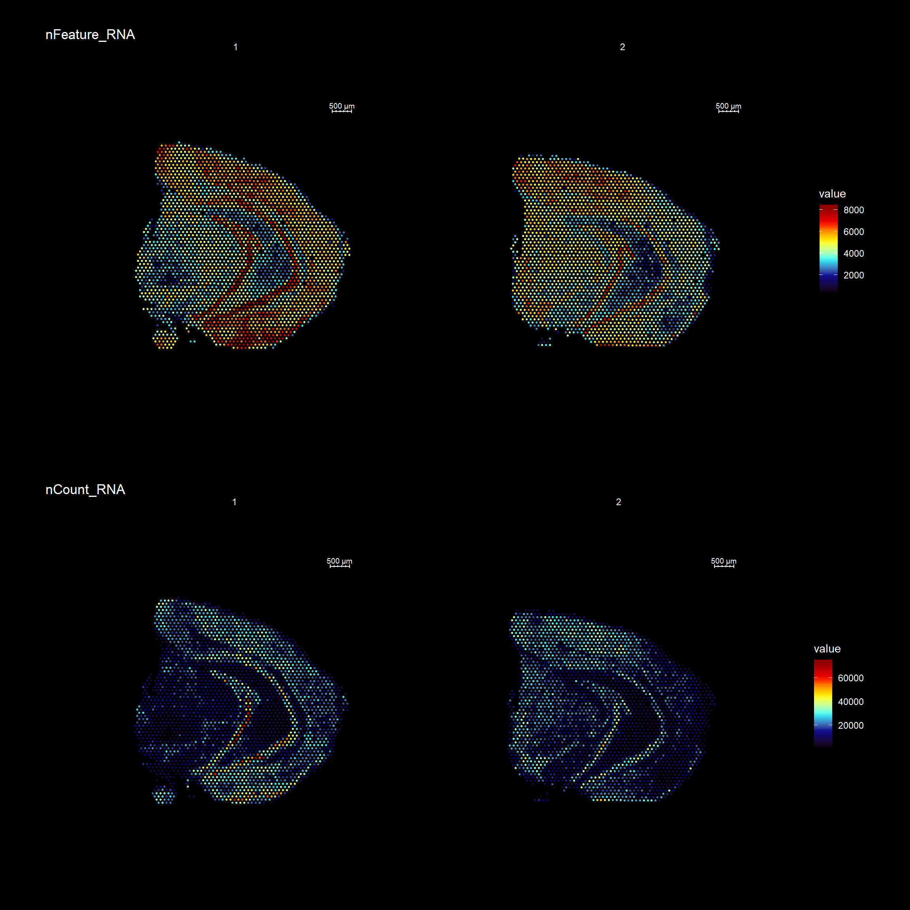
To overlay a spatial feature heatmaps on top of the HE image we use the FeatureOverlay() function. Handling large images gets clumsy so we recommend to work with down-scaled versions of the images that takes up less memory.
FeatureOverlay(se,
features = "Cck",
pt.size = 0.5,
pt.alpha = 0.5,
cols = c("black", "dark blue", "cyan", "yellow", "red", "dark red"),
dark.theme = T,
type = "raw")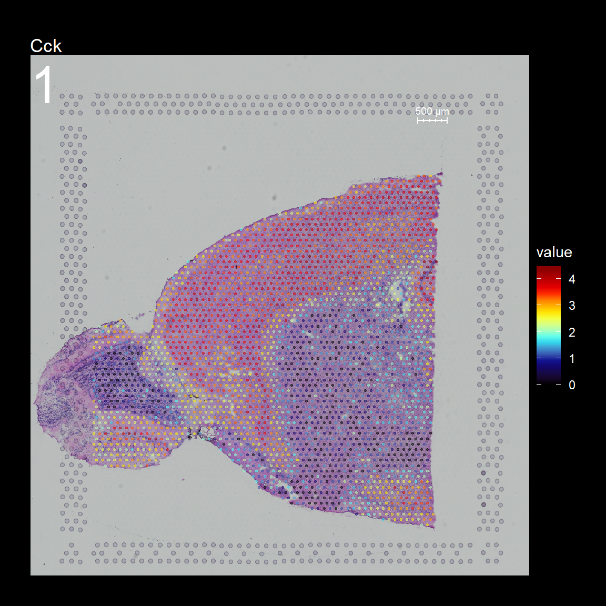
You can see that by default, the first sample was selected for the feature overlay. If you wish to visualize another sample you can specify the sample.index parameter. If you wish to plot several features side by side, you can just specify as many as you want.
FeatureOverlay(se,
features = c("Cck", "Calb2", "Dcn", "Nrgn"),
pt.size = 0.5,
pt.alpha = 0.5,
cols = c("black", "dark blue", "cyan", "yellow", "red", "dark red"),
dark.theme = T,
type = "raw")
Another neat feature that can be useful for visualization purposes is to mask the background of the HE images. The function MaskImages() can be used to remove the background currently works well for tissues with a clearly defined border. Since masking is a non trivial problem, it is possible that the masking will fail for certain tissue types. If this happens you can try to modify the parameters in MaskImages() to see if you can obtain better results.
NOTE that the image procesing methods have been optimized for small images and if you have loaded images in higher resolution there is a greater risk that some steps will fail. If you still wish to use images with higher resolution there are instructions on how to do this in the Resolution section below.
se <- MaskImages(object = se)
There are 5 types of images which can be stored into the Seurat object; “raw”, “masked”, “masked.masks”, “processed” and “processed.masks”. “raw” represents the original HE images without any modifications. In the “masked” images, the background have been removed using a mask which is stored in “masked.masks”. Similarly, the “processed” images are also masked using “processed.masks” but have been further modified by applying rigid transformations such as rotations and shifts.
You can look at the HE images using the ImagePlot() function.The ImagePlot function will automatically label the samples from 1 to N where N is the total number of samples. If you are running the function within RStudio you can take advantage of the Viewer panel to explore the images. Setting method=“raster” and the plot function will use the default plotting device in R. You can also change the layout of the images by forcing a different number of columns by setting ncols.
# Plot HE images
ImagePlot(se, ncols = 2, method = "raster", type = "raw", darken = T) # Raw image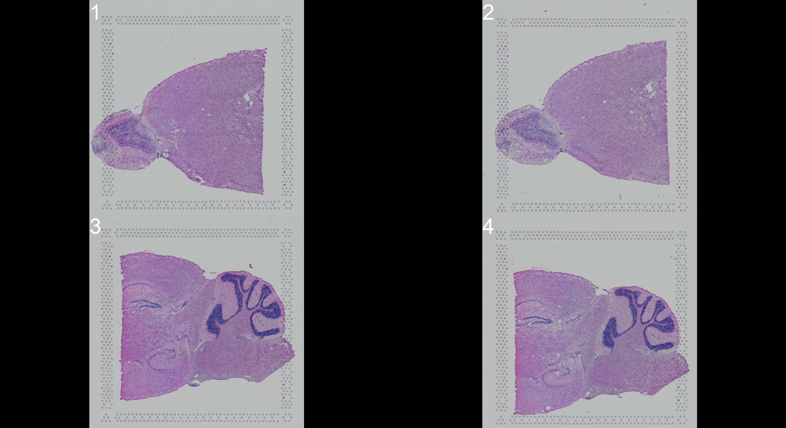
ImagePlot(se, ncols = 2, method = "raster", type = "masked", darken = T) # Masked image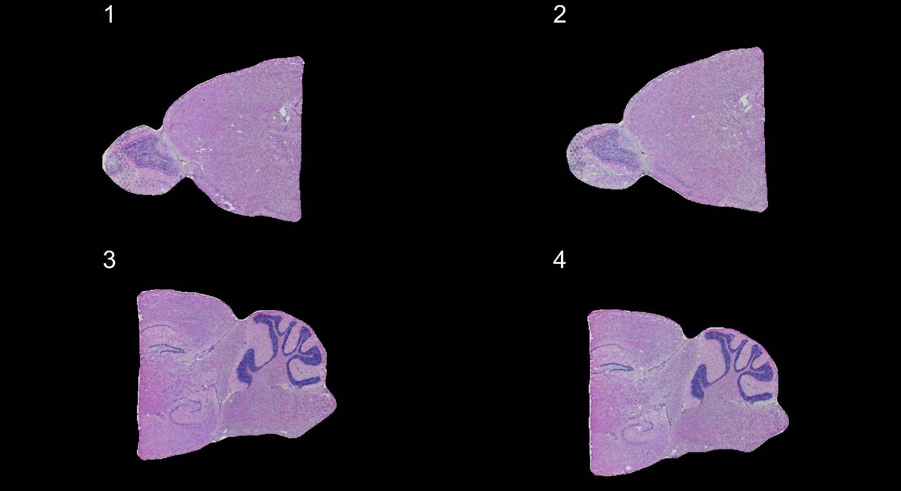
ImagePlot(se, ncols = 2, method = "raster", type = "masked.masks") # Mask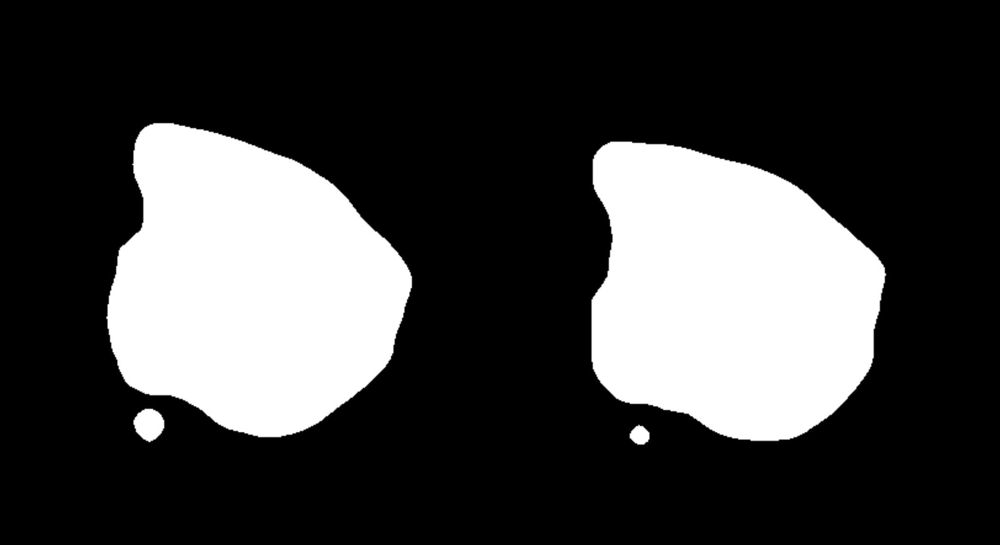
Individual transformations to images
If you follow along the test set in this vignette, you will notice that the samples are not quite aligned with respect to each other on the array. We have implemented three different method to align images; AlignImages(), WarpImages() and ManualAlignImages().
Automatic alignment
The automatic alignment method (AlignImages()) first tries to detect the tissue edges from each image. By default, the first image (reference.index = 1) is used as a reference but you can specify any sample with the reference.indexoption. Then, for each image, a transformation matrix is learned that can be used to map coordinates to the reference image. This alignment method will sometimes fail and in that case you can align the images manually instead using the ManualAlignImages() function. This is typically required when; (1) the tissue is bigger than the image and therefore outside the frame, (2) the tissue has a symmetrical shape (for example if the tissue has a round shape, it will be difficult to find an optimal alignment using the tissue edges), (3) the masking has failed.
The actual transformation is done using the imwarp() function from the imager R package using a “backward” transformation strategy. This method makes sure that every pixel is painted using linear interpolation so the aligned images will experience some quality loss.
se <- AlignImages(se)
And the result:
ImagePlot(se, method = "raster", darken = T)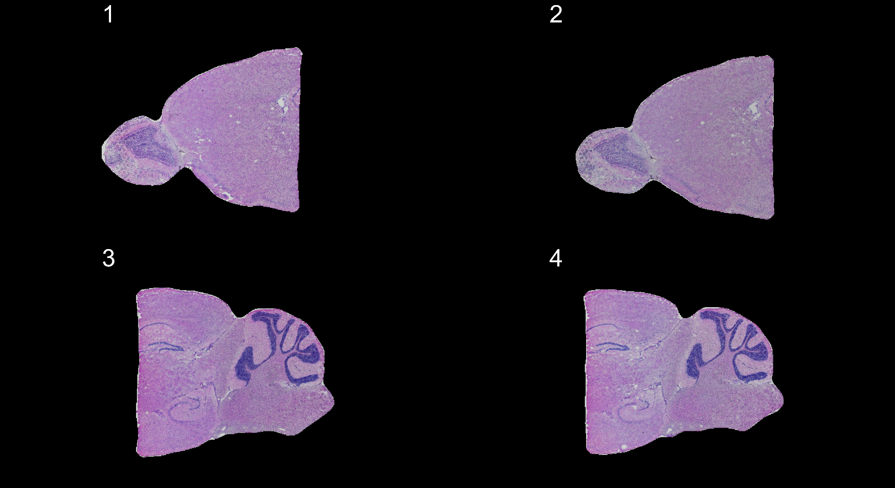
Manual rigid transformations
An alternative method is to apply rigid transformations to the images using the WarpImages() function. This function takes a list of transformations for the samples of your choice and converts the transformations into mapping functions which can be used to warp the images.
The available transformations are; “center.x”, “center.y”, “mirror.x”, “mirror.y” and “angle”
transforms <- list("2" = list("angle" = 90))
se.rotate90 <- WarpImages(se, transforms)
ImagePlot(se.rotate90, method = "raster", darken = T)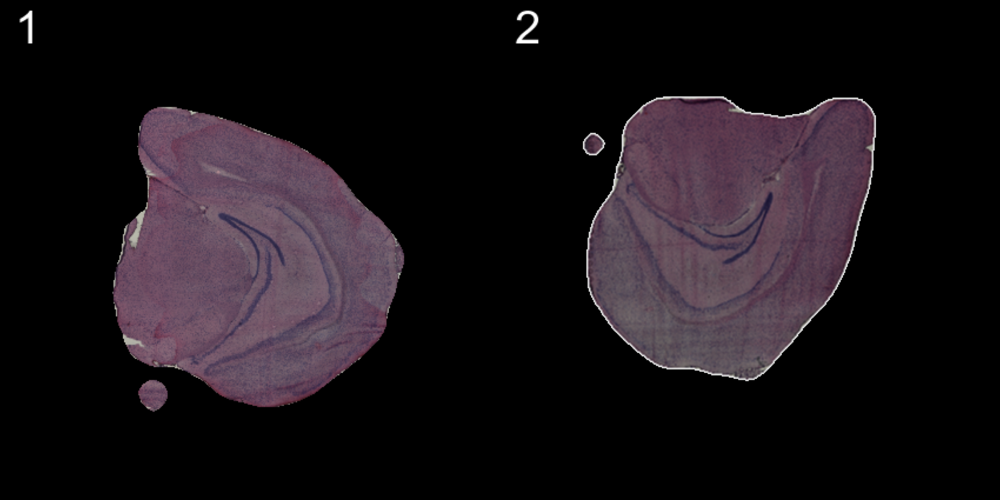
transforms <- list("2" = list("mirror.x" = T))
se.mirrorx <- WarpImages(se, transforms)
ImagePlot(se.mirrorx, method = "raster", darken = T)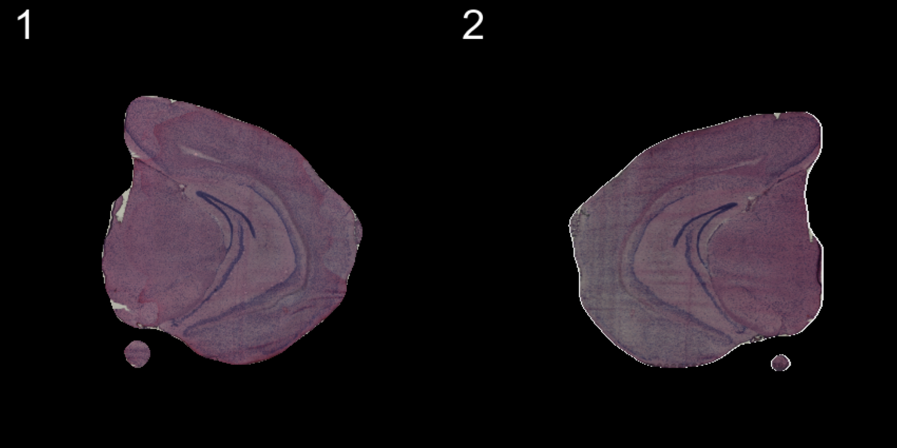
transforms <- list("2" = list("mirror.y" = T))
se.mirrory <- WarpImages(se, transforms)
ImagePlot(se.mirrory, method = "raster", darken = T)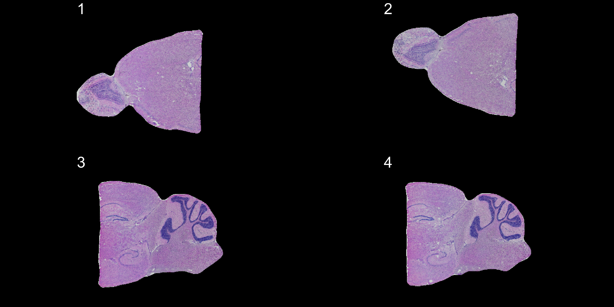
Any transformations applied to the images will also be applied to the coordinates used to map gene expression values onto the images.
heatmap.colors <- c("black", "dark blue", "cyan", "yellow", "red", "dark red")
ST.FeaturePlot(se, features = "Cck", pt.size = 0.5, cols = heatmap.colors, dark.theme = T)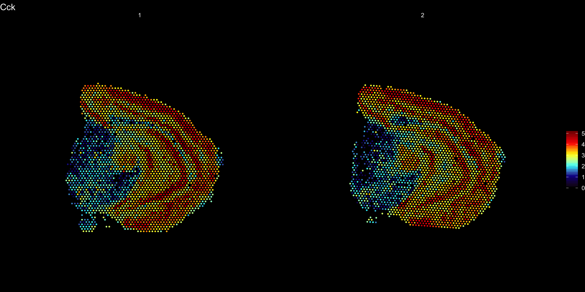
ST.FeaturePlot(se.rotate90, features = "Cck", pt.size = 0.5, cols = heatmap.colors, dark.theme = T)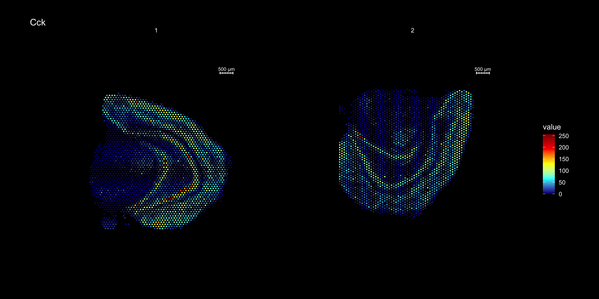
ST.FeaturePlot(se.mirrorx, features = "Cck", pt.size = 0.5, cols = heatmap.colors, dark.theme = T)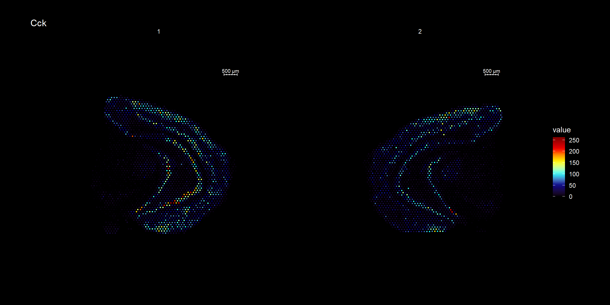
ST.FeaturePlot(se.mirrory, features = "Cck", pt.size = 0.5, cols = heatmap.colors, dark.theme = T)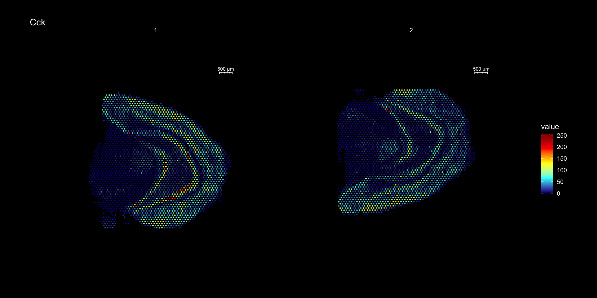
Visualize multiple samples
If you still want to plot overlaid spatial heatmaps for multiple samples at the same time you can do this with the MultiFeatureOverlay() function.
MultiFeatureOverlay(se, features = "Nrgn",
sampleids = 1:2,
pt.size = 0.5, pt.alpha = 0.5,
cols = c("black", "dark blue", "cyan", "yellow", "red", "dark red"),
method = "raster",
dark.theme = T)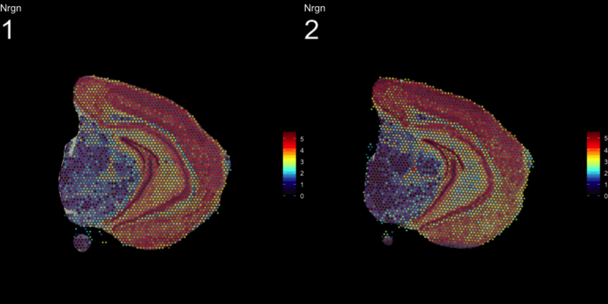
The type parameter can also be set in the FeatureOverlay() function to override the default use of processed images.
FeatureOverlay(object = se, features = c("Nrgn", "Cck"),
cols = c("black", "dark blue", "cyan", "yellow", "red", "dark red"),
pt.size = 0.5,
pt.alpha = 0.5,
sample.index = 2,
type = "raw",
dark.theme = T)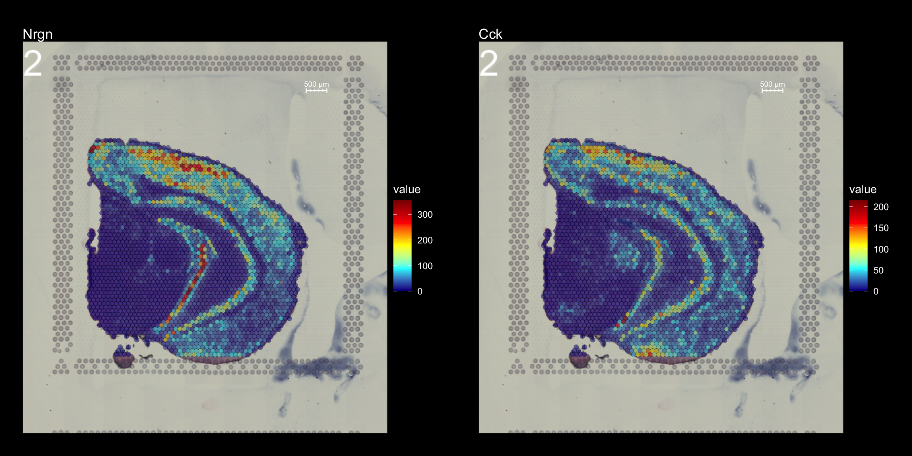
sessionInfo()R version 3.6.1 (2019-07-05)
Platform: x86_64-apple-darwin15.6.0 (64-bit)
Running under: macOS Mojave 10.14.6
Matrix products: default
BLAS: /Library/Frameworks/R.framework/Versions/3.6/Resources/lib/libRblas.0.dylib
LAPACK: /Library/Frameworks/R.framework/Versions/3.6/Resources/lib/libRlapack.dylib
locale:
[1] en_US.UTF-8/en_US.UTF-8/en_US.UTF-8/C/en_US.UTF-8/en_US.UTF-8
attached base packages:
[1] parallel stats4 stats graphics grDevices utils datasets
[8] methods base
other attached packages:
[1] STutility_0.1.0 ggplot2_3.2.1
[3] SingleCellExperiment_1.6.0 SummarizedExperiment_1.14.1
[5] DelayedArray_0.10.0 BiocParallel_1.18.1
[7] matrixStats_0.55.0 Biobase_2.44.0
[9] GenomicRanges_1.36.1 GenomeInfoDb_1.20.0
[11] IRanges_2.18.3 S4Vectors_0.22.1
[13] BiocGenerics_0.30.0 Seurat_3.1.1
loaded via a namespace (and not attached):
[1] backports_1.1.5 workflowr_1.3.0
[3] systemfonts_0.1.1 plyr_1.8.4
[5] igraph_1.2.4.1 lazyeval_0.2.2
[7] splines_3.6.1 crosstalk_1.0.0
[9] listenv_0.7.0 digest_0.6.22
[11] foreach_1.4.7 htmltools_0.4.0
[13] viridis_0.5.1 magick_2.2
[15] tiff_0.1-5 gdata_2.18.0
[17] magrittr_1.5 cluster_2.1.0
[19] doParallel_1.0.15 ROCR_1.0-7
[21] globals_0.12.4 RcppParallel_4.4.4
[23] R.utils_2.9.0 jpeg_0.1-8
[25] colorspace_1.4-1 ggrepel_0.8.1
[27] xfun_0.10 dplyr_0.8.3
[29] crayon_1.3.4 RCurl_1.95-4.12
[31] jsonlite_1.6 zeallot_0.1.0
[33] survival_2.44-1.1 zoo_1.8-6
[35] iterators_1.0.12 ape_5.3
[37] glue_1.3.1 gtable_0.3.0
[39] zlibbioc_1.30.0 XVector_0.24.0
[41] webshot_0.5.1 leiden_0.3.1
[43] future.apply_1.3.0 scales_1.0.0
[45] bibtex_0.4.2 miniUI_0.1.1.1
[47] Rcpp_1.0.2 metap_1.1
[49] viridisLite_0.3.0 xtable_1.8-4
[51] reticulate_1.13 rsvd_1.0.2
[53] SDMTools_1.1-221.1 tsne_0.1-3
[55] htmlwidgets_1.5.1 httr_1.4.1
[57] gplots_3.0.1.1 RColorBrewer_1.1-2
[59] ica_1.0-2 pkgconfig_2.0.3
[61] R.methodsS3_1.7.1 uwot_0.1.4
[63] labeling_0.3 tidyselect_0.2.5
[65] rlang_0.4.1 manipulateWidget_0.10.0
[67] reshape2_1.4.3 later_1.0.0
[69] munsell_0.5.0 tools_3.6.1
[71] ggridges_0.5.1 evaluate_0.14
[73] stringr_1.4.0 fastmap_1.0.1
[75] yaml_2.2.0 npsurv_0.4-0
[77] knitr_1.25 fs_1.3.1
[79] fitdistrplus_1.0-14 rgl_0.100.30
[81] caTools_1.17.1.2 purrr_0.3.2
[83] RANN_2.6.1 readbitmap_0.1.5
[85] pbapply_1.4-2 future_1.14.0
[87] nlme_3.1-141 whisker_0.4
[89] mime_0.7 R.oo_1.22.0
[91] ggiraph_0.6.1 xml2_1.2.2
[93] compiler_3.6.1 plotly_4.9.0
[95] png_0.1-7 lsei_1.2-0
[97] Morpho_2.7 tibble_2.1.3
[99] stringi_1.4.3 gdtools_0.2.0
[101] lattice_0.20-38 Matrix_1.2-17
[103] shinyjs_1.0 vctrs_0.2.0
[105] pillar_1.4.2 lifecycle_0.1.0
[107] Rdpack_0.11-0 lmtest_0.9-37
[109] RcppAnnoy_0.0.13 data.table_1.12.2
[111] cowplot_1.0.0 bitops_1.0-6
[113] irlba_2.3.3 Rvcg_0.18
[115] gbRd_0.4-11 httpuv_1.5.2
[117] colorRamps_2.3 imager_0.41.2
[119] R6_2.4.0 promises_1.1.0
[121] bmp_0.3 KernSmooth_2.23-15
[123] gridExtra_2.3 codetools_0.2-16
[125] MASS_7.3-51.4 gtools_3.8.1
[127] assertthat_0.2.1 rprojroot_1.3-2
[129] withr_2.1.2 sctransform_0.2.0
[131] GenomeInfoDbData_1.2.1 grid_3.6.1
[133] tidyr_1.0.0 rmarkdown_1.16
[135] Rtsne_0.15 git2r_0.26.1
[137] shiny_1.4.0